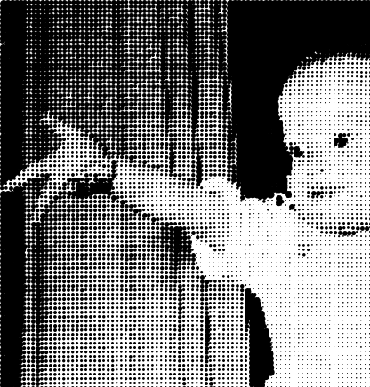

Very nice!
Maximum result with minimum amount of code.
I may point out that this is already a Core Image filter, called CIDotScreen.
This produces a vector based image not one that is pixel based.
hm, i try it again without the image:
nice one, frank
i tried something similar some days ago (also inspired by the examle in the core image library). the intention was to rasterize an image to lasercut the dots into a metalsheet and use this as a facadepanel (hence the whitespace between the dots). but then i got carried away trying different stuff so this image was one result.
there is one thing i noted, though. the dots in the grid don't line up in the center of the rows, but at their left and upper boundaries (also visible in your image). i found this odd, as in the nauseating.py in the grid-example the dots line up center. i figuered it had to do with the way, you draw the dots in the grid:
1) if you draw the dots with actual numeric values, they line up left and top (like in your image, where it is best visible when the dots get very small)
2) the dots line up center, like in the nauseating.py, when you have them one size and scale them up or down before you draw them.
so the 'anchor'-point for putting things on the canvas is top/left, while the 'anchor'-point for scaling is the center.
as i said, just something i noted. michael.
my 'slightly' longer and messier code:
size(800, 600) # import the colors and the coreimage library colors = ximport("colors") coreimage = ximport("coreimage") math = ximport("math") canvas = coreimage.canvas(800, 600) layer = canvas.layer("_images/test_1.jpg") pixel = layer.pixels() colormode(RGB, 255) w, h = layer.size() # set some basic variables # set the base dot size pSize = 16 # set the minimum dot size (threshold) tHold = 3 # a dot correction variable to # decrease or increase size pCorrect = 5 for x, y in grid(w / pSize, h / pSize, pSize, pSize): pColor = pixel.get_pixel(x, y) fill(pColor) # for color dots # fill(0) # for black dots # use the brightness or saturation of the color to get the dotsize pVal = pColor.brightness # pVal = 1 - pColor.saturation # calculate the actual size and scaling factor of the dots aSize = pSize - math.ceil(pSize * pVal) sFac = aSize / pSize # now do some work push() scale(sFac) if (aSize > tHold): #sort out smaller dots oval(x, y, pSize + pCorrect, pSize + pCorrect) pop()

{kind=link}
Lichtenstein kind'a
Posted by Frank on Feb 18, 2008
Folks...
Just thought I would share some code I cobbled together. It makes newspaper print or comic book printing. The image is made from varying sized black ovals... sized to the shade of gray at that point in the image. Keep your image at around 640x480 or the number of ovals gets hard to process on something like a laptop. By playing around with this you can make lots of interesting variations. This code is a variation on code I found in the coreimage notes.